Les trois composants ELT Greenplum sont étroitement liés en ce qui concernent leurs conditions d'utilisation. Ces composants sont conçus pour prendre en charge les schémas Greenplum DB afin de générer des commandes Insert, dont des clauses, qui sont exécutés dans la table de sortie définie.
|
Famille de composant |
ELT/Map/Greenplum | |
|
Fonction |
Le composant tELTGreenplumMap permet de construire votre commande SQL graphiquement en utilisant la table fournie en entrée. | |
|
Objectif |
Ce composant utilise les tables fournies en entrée pour alimenter les paramètres dans la commande mise en place. L'instruction peut inclure des joints internes ou externes qui peuvent être implémentés entre des tables ou entre une table et ses alias. | |
|
Basic settings |
Use an existing connection |
Cochez cette case et sélectionnez le composant de connexion adéquat à partir de la liste Component list pour réutiliser les paramètres d’une connexion que vous avez déjà définie. NoteLorsqu’un Job contient un Job parent et un Job enfant, si vous souhaitez utiliser une connexion existant entre les deux niveaux, par exemple pour partager la connexion créée par le Job parent avec le Job enfant, vous devez :
Pour plus d’informations concernant le partage d’une connexion à travers différents niveaux de Jobs, consultez le Guide utilisateur de Talend Open Studio. |
|
|
ELT Greenplum Map Editor |
L’éditeur ELT du Mapper vous permet de définir le schéma de sortie ainsi que de construire graphiquement la commande SQL à exécuter. Le nom des colonnes du schéma peut être différent du nom des colonnes dans la base de données. |
|
|
Style link |
Sélectionnez le type d’affichage des liens. Auto : par défaut, les liens entre les schémas d’entrée et de sortie et les paramètres du service Web sont en forme de courbe. Bezier curve : les liens entre les schémas et les paramètres du service Web sont en forme de ligne. Line : les liens entre les schémas et les paramètres du service Web sont en forme de lignes droites. Cette option vous permettra d’optimiser les performances. |
|
|
Property type |
Peut être Built-in ou Repository. |
|
|
|
Built-in : Propriétés utilisées ponctuellement. |
|
|
|
Repository : Sélectionnez le fichier de propriétés du composant. Les champs suivants sont alors pré-remplis à l’aide des données collectées. |
|
|
Host |
Adresse IP du serveur de base de données. |
|
|
Port |
Numéro de port d’écoute du serveur de la base. |
|
|
Database |
Nom de la base de données |
|
|
Username et Password |
Données d’authentification de l’utilisateur de la base de données. |
|
Advanced settings |
Additional JDBC parameters |
Spécifiez des informations supplémentaires de connexion à la base de données créée. Cette option n'est pas disponible lorsque vous utilisez l'option Use an existing connection dans les Basic settings. |
|
|
tStatCatcher Statistics |
Cochez cette case pour collecter les données de log au niveau du Job ainsi qu’au niveau du composant. |
|
Dynamic settings |
Cliquez sur le bouton [+] pour ajouter une ligne à la table. Dans le champ Code, saisissez une variable de contexte afin de sélectionner dynamiquement votre connexion à la base de données parmi celles prévues dans votre Job. Cette fonctionnalité est utile si vous devez accéder à plusieurs tables de bases de données ayant la même structure mais se trouvant dans différentes bases de données, en particulier lorsque vous travaillez dans un environnement dans lequel vous ne pouvez pas changer les paramètres de votre Job, par exemple lorsque votre Job doit être déployé et exécuté dans un Studio Talend indépendant. La table Dynamic settings n'est disponible que si la case Use an existing connection est cochée dans la vue Basic settings. Lorsqu'un paramètre dynamique est configuré, la liste Component List devient inaccessible dans la vue Basic settings. Pour plus d'informations concernant les Dynamic settings et les variables de contexte, consultez le Guide utilisateur Talend Open Studio. | |
|
Utilisation |
L’utilisation du composant tELTGreenplumMap est étroitement liée à celle des composants tELTGreenplumInput et tELTGreenplumOutput. Notez que le lien de sortie (output) à utiliser avec ces deux composants doit respecter strictement la syntaxe du nom de la table. NoteLes composants ELT ne traitent pas le flux de données lui-même mais uniquement les informations du schéma. | |
Dans ce scénario, un composant tELTGreenplumMap est utilisé afin de récupérer les données de la table source employee_by_statecode, comparer sa colonnestatecode à la table statecode et enfin mapper les colonnes désirées à partir des deux tables vers la table de sortie employee_by_state.
Avant l'exécution du Job, les trois tables employee_by_statecode, statecode et employee_by_state ressemblent à ceci :

Déposez les composants suivants de la Palette dans l'espace de modélisation graphique : un tGreenplumConnection, deux tELTGreenplumInput, un tELTGreenplumMap, untELTGreenplumOutput, un tGreenplumCommit, untGreenplumInput et un tLogRow.
Renommez le composant tGreenplumConnection en connect_to_greenplum_host, les deux tELTGreenplumInput en employee+statecode et statecode, le tELTGreenplumMap en match+map, le tELTGreenplumOutput en map_data_output, le tGreenplumCommit en commit_to_host, le tGreenplumInput en read_map_output_table et le tLogRow en show_map_data
Reliez le composant tGreenplumConnection au tELTGreenplumMap à l'aide d'un lien OnSubjobOk.
Reliez le composant tELTGreenplumMap au tGreenplumCommit à l'aide d'un lien OnSubjobOk.
Reliez le composant tGreenplumCommit au tGreenplumInput à l'aide d'un lien OnSubjobOk.
Reliez le composant tGreenplumInput au tLogRow à l'aide d'une connexion Row > Main.
Les deux tELTGreenplumInput et le composant tELTGreenplumOutput seront connectés plus tard au tELTGreenplumMap, une fois les tables correspondantes définies.
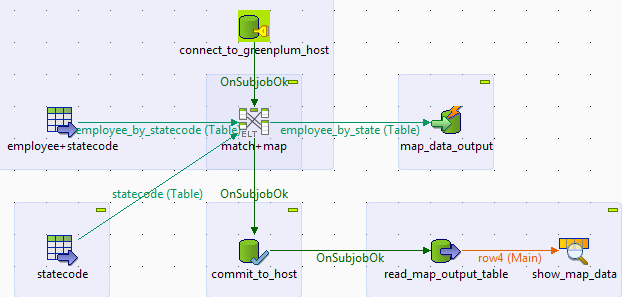
Double-cliquez sur le composant tGreenplumConnection pour ouvrir sa vue Basic settings.
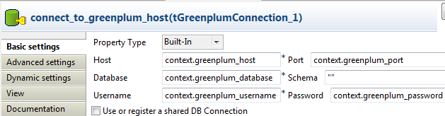Dans les champs Host et Port, saisissez les variables de contexte pour le serveur Greenplum.
Dans le champ Database, saisissez la variable de contexte pour la base de données Greenplum.
Dans les champs Username et Password, saisissez les variables de contexte pour les paramètres d'authentification.
Pour plus d'informations sur les variables de contexte, consultez le Guide utilisateur deTalend Open Studio.
Double-cliquez sur employee+statecode pour ouvrir sa vue Basic settings dans l'onglet Component.
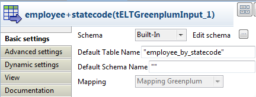Dans le champ Default table name, saisissez le nom de la table source, nommée employee_by_statecode.
Cliquez sur le bouton [...] près du champ Edit schema pour ouvrir l'éditeur de schéma.

Cliquez sur le bouton [+] pour ajouter trois colonnes et appelez-les id, name et statecode, avec pour type respectivement INT4, VARCHAR, et INT4.
Cliquez sur OK pour fermer l'éditeur de schéma.
Reliez le employee+statecode au tELTGreenplumMap en utilisant le composant de sortie employee_by_statecode.
Double-cliquez sur le statecode pour ouvrir sa vue Basic settings dans l'onglet Component.
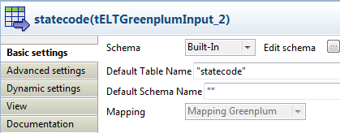Dans le champ Default table name, saisissez le nom de la table, ici statecode.
Cliquez sur le bouton [...] près du champ Edit schema pour ouvrir l'éditeur de schéma.
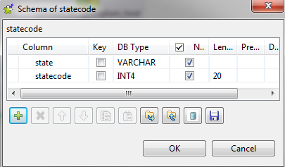Cliquez sur le bouton [+] pour ajouter deux colonnes et appelez-les state et statecode, avec pour type respectivement VARCHAR et INT4.
Cliquez sur OK pour fermer l'éditeur de schéma.
Reliez le statecode au tELTGreenplumMap en utilisant la sortie statecode.
Cliquez le composant tELTGreenplumMap pour ouvrir sa vue Basic settings dans l'onglet Component.
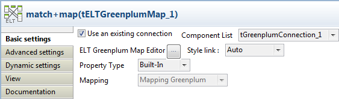Cochez la case Use an existing connection.
Cliquez sur le bouton [...] près du champ ELT Greenplum Map Editor pour ouvrir l'éditeur de mapping.
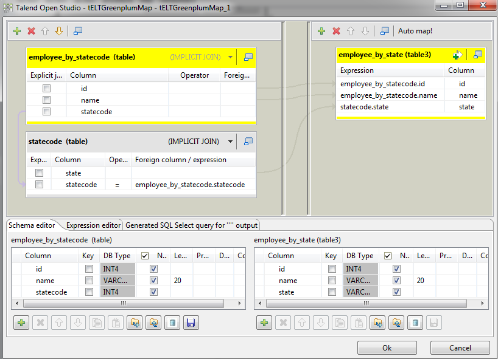Cliquez sur le bouton [+] en haut à gauche pour ouvrir la fenêtre de sélection de table.
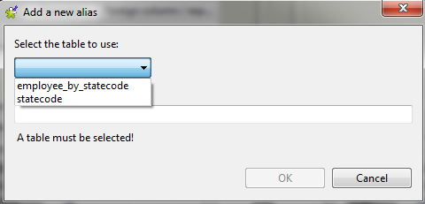Sélectionnez les tables employee_by_statecode et statecode dans la liste et cliquez sur Ok.
Les tables apparaissent sur le panneau gauche de l'éditeur.
Dans le coin en haut à droite, cliquez sur le bouton [+] pour ajouter la table de sortie nommée employee_by_state.
Cliquez sur OK pour fermer l'éditeur de map.
Double-cliquez sur le tELTGreenplumOutput pour ouvrir sa vue Basic settings dans l'onglet Component.
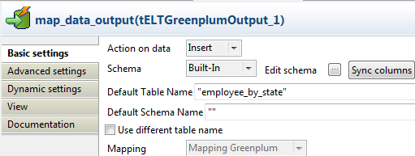Dans le champ Default table name, saisissez le nom de la table de sortie, ici employee_by_state.
Cliquez sur le bouton [...] près du champ Edit schema pour ouvrir l'éditeur de schéma.
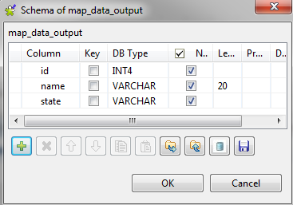Cliquez sur le bouton [+] pour ajouter trois colonnes et appelez-les respectivement id, name et state, avec pour type respectivement INT4, VARCHAR, et VARCHAR .
Cliquez sur OK pour fermer l'éditeur de schéma.
Reliez le composant tELTGreenplumMap au tELTGreenplumOutput en utilisant la table de sortie employee_by_state.
Cliquez sur OK dans la fenêtre pop-up pour récupérer le schéma du tELTGreenplumOutput.

La table de sortie employee_by_state partage maintenant le même schéma que celui du tELTGreenplumOutput.
Double-cliquez sur le composant tELTGreenplumMap pour ouvrir l'éditeur de map.
Déposez la colonne statecode de la table employee_by_statecode dans la colonne du même nom, dans la table statecode, afin de chercher les enregistrements des deux tables ayant les mêmes valeurs statecode.
Déposez les colonnes id et name de la table employee_by_statecode ainsi que la colonne statecode de la table statecode dans les colonnes de même nom dans la table de sortie employee_by_state.
Cliquez sur OK pour fermer l'éditeur de mapping.
Double-cliquez sur le tGreenplumInput pour ouvrir sa vue Basic settings dans l'onglet Component.
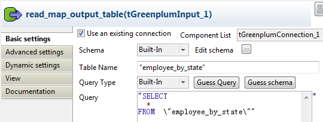Cochez la case Use an existing connection.
Dans le champ Table name, saisissez le nom de la table source, appelée employee_by_state.
Dans le champ Query, saisissez la commande
"SELECT * FROM \"employee_by_state\"".Double-cliquez sur le composant tLogRow pour ouvrir sa vue Basic settings dans l'onglet Component.
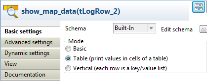Dans la zone Mode, sélectionnez l'option Table (print values in cells of a table) pour une meilleure lisibilité.

Pour des scénarios associés, consultez les scénarios du tELTMysqlMap :